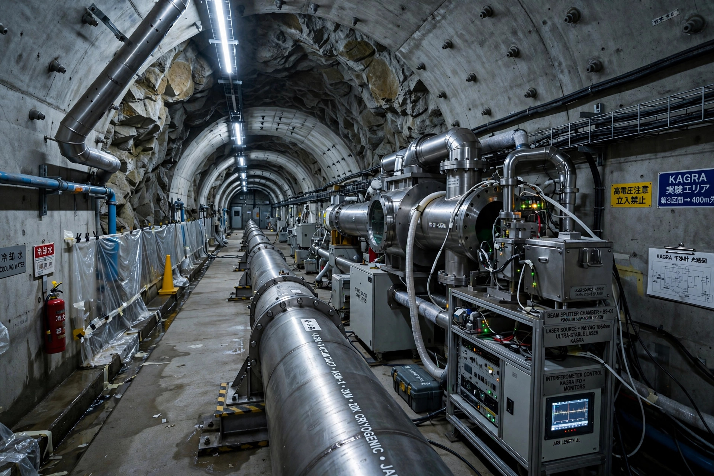

| Location | Kamioka Observatory, Hida, Gifu, Japan (underground) |
|---|---|
| Type | Laser interferometer gravitational-wave detector |
| Arm length | 3 km |
| First observation run | 2020 (joint run with GEO600); joined LIGO–Virgo O4 in 2023 |
| Operator | University of Tokyo (ICRR) and partners |
The Kamioka Gravitational Wave Detector (KAGRA, stylised as KAGRA) is a large-scale interferometric gravitational-wave detector located underground at the Kamioka Observatory near Hida in Gifu Prefecture, Japan. It is the first major gravitational-wave detector built underground and the first to use cryogenically cooled mirrors. The name derives from "Kamioka" and "gravity".
KAGRA is a Michelson laser interferometer with two perpendicular arms each 3 kilometres long, housed in tunnels beneath Mount Ikeno. Placing the detector some 200 metres underground reduces seismic noise, a dominant disturbance for ground-based detectors. Its test masses are sapphire mirrors cooled to about 20 kelvin, which suppresses thermal noise — a combination of features that serves as a prototype for future third-generation observatories such as the Einstein Telescope.
Construction of the tunnels was completed in 2014, and the detector was inaugurated in 2019. KAGRA began observing in February 2020 in a joint run with GEO600, cut short by the COVID-19 pandemic. After upgrades it joined the fourth observing run (O4) of the LIGO–Virgo–KAGRA network in May 2023, though an earthquake on 1 January 2024 damaged components and forced an extended shutdown for repairs. Adding a fourth site to the global network improves the sky localisation of gravitational-wave sources.